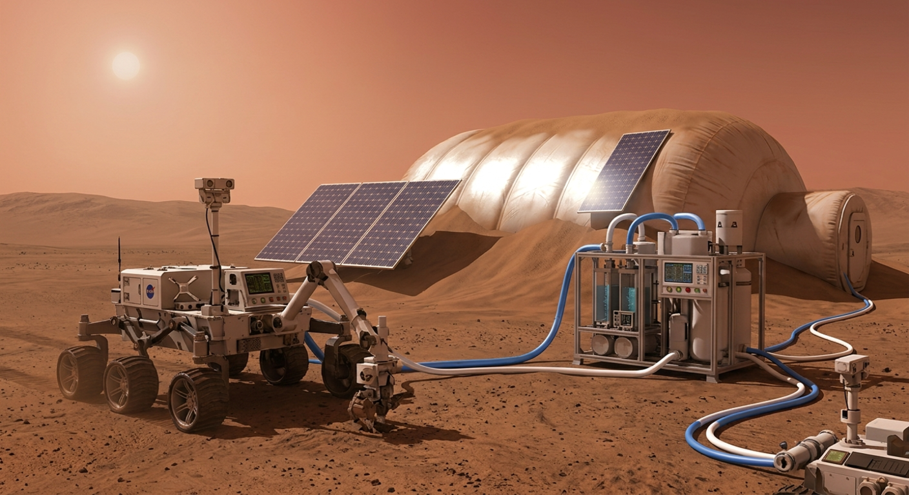

1. Procesamiento In Situ de Recursos (ISRU)
No transportamos materiales de construcción livianos ni costosos desde la Tierra. En su lugar, desplegamos unidades automatizadas que extraen volátiles del suelo local. Si hay hielo atrapado en el regolito o en el subsuelo, lo calentamos mediante electrólisis para separar el agua en nitrógeno, hidrógeno y oxígeno respirable. Este mismo proceso de electrólisis alimenta nuestros sistemas primarios de soporte vital.